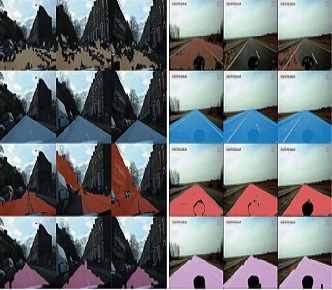
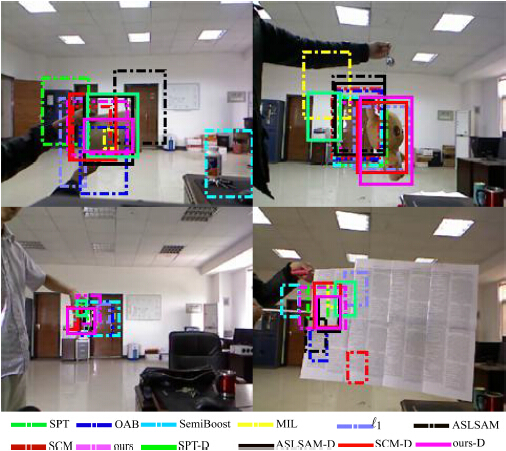
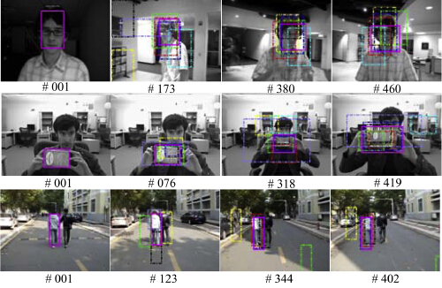
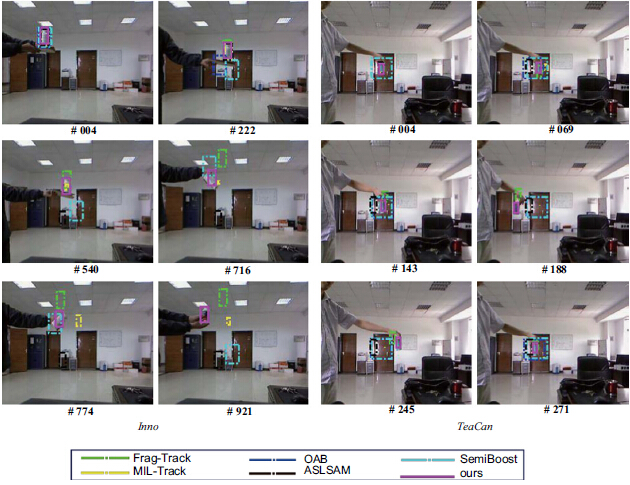
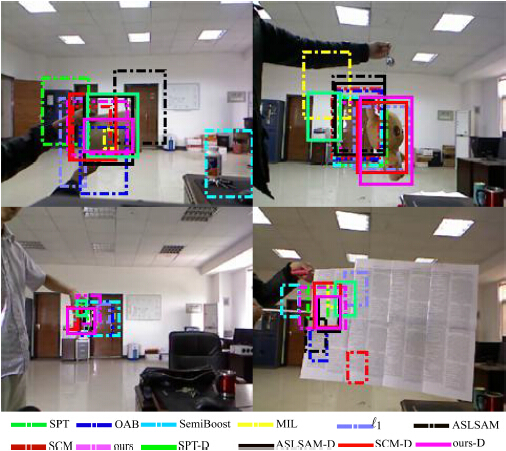
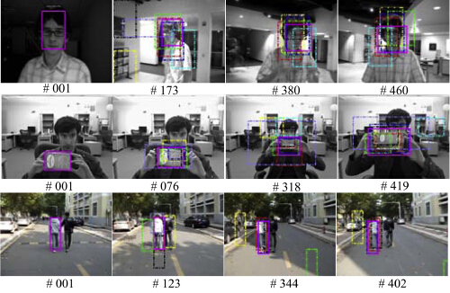
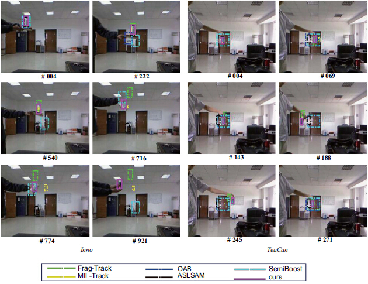

Adaptive Road Detection via Context-aware Label Transfer
[ Project page ]
Adaptive Road Detection via Context-aware Label Transfer [pdf]
Qi Wang, Jianwu Fang, and Yuan Yuan, Neurocomputing(Elsevier), vol. 158, pp. 174-183, 2015, IF=2.083.

Online Anomaly Detection in Crowded Scenes via Structure Analysis
[ Project page ]
Online Anomaly Detection in Crowded Scenes via Structure Analysis [pdf]
Yuan Yuan, Jianwu Fang, and Qi Wang, IEEE Transactions on Cybernetics (IEEE), vol. 45, no. 3, pp. 562-575, 2015, IF=3.469.

Robust Superpixel Tracking via Depth Fusion [pdf]
Yuan Yuan, Jianwu Fang, and Qi Wang , IEEE Transactions on Circuit Systems for Video Technology (IEEE)}, vol. 24, no. 1, pp. 15-26, 2014, IF=2.615.

Part-based Online Tracking with Geometry Constraint and Attention Selection [pdf]
Jianwu Fang, Qi Wang, and Yuan Yuan, IEEE Transactions on Circuit Systems for Video Technology (IEEE)}, vol. 24, no. 5, pp. 854-864, 2014, IF=2.615.

Multi-cue Based Tracking [pdf]
Qi Wang, Jianwu Fang, and Yuan Yuan, Neurocomputing (Elsevier)}, vol. 131, pp. 227-236, 2014, IF=2.083.
Adaptive Road Detection via Context-aware Label Transfer
[ Project page ]
Adaptive Road Detection via Context-aware Label Transfer [pdf]
Qi Wang, Jianwu Fang, and Yuan Yuan, Neurocomputing(Elsevier), vol. 158, pp. 174-183, 2015, IF=2.083.
Online Anomaly Detection in Crowded Scenes via Structure Analysis
[ Project page ]
Online Anomaly Detection in Crowded Scenes via Structure Analysis [pdf]
Yuan Yuan, Jianwu Fang, and Qi Wang, IEEE Transactions on Cybernetics (IEEE), vol. 45, no. 3, pp. 562-575, 2015, IF=3.469.

Robust Superpixel Tracking via Depth Fusion
[ Project page ]Robust Superpixel Tracking via Depth Fusion [pdf]
Yuan Yuan, Jianwu Fang, and Qi Wang , IEEE Transactions on Circuit Systems for Video Technology (IEEE)}, vol. 24, no. 1, pp. 15-26, 2014, IF=2.615.

Part-based Online Tracking with Geometry Constraint and Attention Selection
[ Project page ]Part-based Online Tracking with Geometry Constraint and Attention Selection [pdf]
Jianwu Fang, Qi Wang, and Yuan Yuan, IEEE Transactions on Circuit Systems for Video Technology (IEEE)}, vol. 24, no. 5, pp. 854-864, 2014, IF=2.615.

Multi-cue Based Tracking
[ Project page ]Multi-cue Based Tracking [pdf]
Qi Wang, Jianwu Fang, and Yuan Yuan, Neurocomputing (Elsevier)}, vol. 131, pp. 227-236, 2014, IF=2.083.